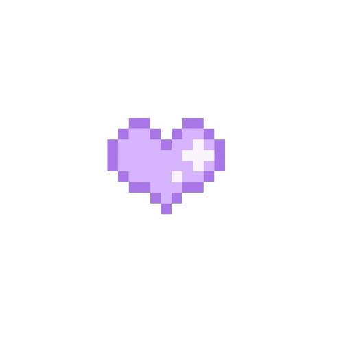

We've been together for: Calculating...
Click the heart for a surprise
Dear Princess Elisa Macapagal,
Hey baby! It is me, your one and only partner, who supports you in every part of your life and will love you for who you are. Happy monthsary to both of us, baby. I made this website to surprise you, and I want you to know that I will do anything for you, and I’m willing to make efforts just for you to feel that I love you so much, and my love for you will never ever fade because I am one hundred one percent sure that my heart only belongs to you.
It is crazy that I made this website, and I know you didn’t ask for this kind of gift, but you know what? I’ll still do it for you because someday, I want to hear that I am the best boyfriend and that your life changed when I started to exist in your life. I want both of us to experience things that we both want to experience, like our first kiss, and now, you have already experienced receiving a gift that is made from a website, and guess what? It is made by your one and only boyfriend.
Ever since we met, I didn’t know that I would start to catch feelings for you. There was a feeling that was warm inside my heart, but I was denying that I already have feelings for you. As days go by, the more I engage in our conversation, the more I start to have deeper feelings for you. I fell in love with you because you are a kind person, you care for your special ones just like me, you are a smart person, you are a thoughtful person, you are funny, you have a comfortable presence when I’m with you, and of course, you are the most beautiful person I’ve ever met.
You made me feel like I’m special to you, and you made me experience all kinds of things that I wasn’t expecting to experience. I love you because you are very precious to me, and letting you go is the worst thing that will happen to me. I love you because I see true love in this relationship. I love you because you make me feel safe and comfortable when I’m with you. I love you because you make my life full of joy. I love you because you inspire me to become a better person every day.
Because of you, I make plans for our future, like studying hard to prepare for my dream job, and working hard because I want us to become successful in the future. Thank you for all the things that you do for me, like listening to my problems and chikas, the way you care about me eating three times a day, and always reminding me of doing something important because not doing that thing will have consequences, and the way you do not tolerate my anger issues.
I still remember when it was my first time to give you a gift, and I’m so happy because when I gave you that gift. I made you smile, and because of that, you made me the happiest man alive in the world. I will never ever forget our moments together, no matter how simple they are. Every moment means so much to me, like seeing you in person will make my problems go away.
When I think about our moments together back then, I realize that we really love each other and we built a beautiful relationship. I hope you still remember our moments together, baby. I always treasure that in my heart because you’re the woman who makes me feel this way. I promise to you, baby, that no matter what happens, I will always choose you. In our ups and downs, my heart will still beat for you.
I can’t wait to marry you in Roman Catholic Church that you are saying in the future and have kids together after marriage. I can’t wait to live with you and be always happy. I can’t wait to give you a good night kiss when we’re about to sleep. I can’t wait to have a comfortable future with you because living comfortably is our dream. I can’t wait to make you breakfast before you go to work. I can’t wait to give you the life that you want.
I will always love you no matter what, baby. I will always be by your side whenever you need help from me. Again, Happy Monthsary to both of us, baby!
Truly yours,
Jastine Villanueva
I love you always, baby!